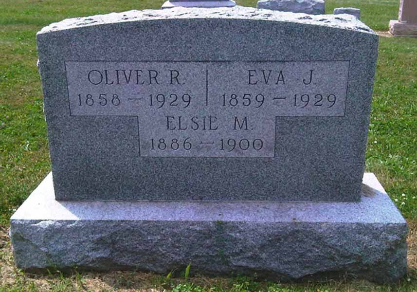

Marriage Data
Marriage record for Samuel Vining and Lucy Cooley:
Census Data
| 1850 | 1860 | 1870 | 1880 | 1890 | 1900 | |
| Samuel Vining | 30 | 40 | [52?] | 60 | ? | ? |
| Lucy (Cooley) Vining | 26 | 34 | 46 | 50 | dead | |
| John Vining | 5 | 15 | [living? in separate household] | |||
| Warner Emerson Vining | 3 | 12 | 22 | married and living in separate household | ||
| William Hallet Vining | 1 | 11 | 21 | married and living in separate household | ||
| Simeon B. Vining | 8 | 18 | married and living in separate household | |||
| Phebe C. Vining | 5 | 15 | [living? in separate household] | |||
| Thomas Vining | 3 | 13 | 22 | ? | ? | |
| Eva J. Vining | 1 | 11 | living in separate household | |||
| Ada Vining | 1 | 11 | [living? in separate household] | |||
| Elisabeth Vining | 9 | [living? in separate household] | ||||
| David Vining | 5 | 16 | ? | ? | ||
| Charles Vining | 3 | 14 | ? | ? |


Death Data
Headstone for Eva J. Vining, daughter of Samuel Vining and Lucy Cooley, in Ashley Union Cemetery, Ashley, Ohio (from Find A Grave):